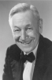
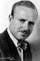

Country:United States, 66 minutes
Spoken languages:English
Genres:Horror, Mystery, Sci-Fi, Thriller
Director(s):Christy Cabanne
Writer(s):Wellyn Totman
Video Codec:Unknown
Number: 3062


Certification:NR
Storyline:
Eccentric tycoon Jasper Whyte hosts a dinner at his mansion and announces that he will divide his money and give each guest a million dollars before the stroke of midnight. When his long-lost granddaughter suddenly arrives, Whyte changes his mind and proclaims that she will receive his entire fortune. A second lady appears at the estate, claiming that she is actually Whyte's granddaughter, Doris Waverly, and the first woman is found murdered in her room! With each guest possessing a motive, the mystery of the killer's identity briskly unfolds through a stirring series of surprises.
Cast:  

Medium: Original DVD,
Comments: Part of: Horror Classics - 100 Movie Pack
Loaned: No
Aspect ratio: Unknown